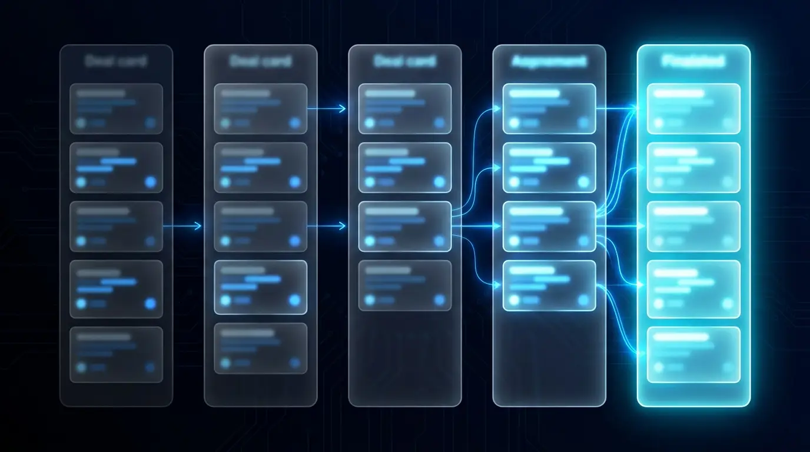

Install the systems that turn attention into revenue
Six productised growth systems. Each one is a defined build with a defined outcome — adapted to your stack, then handed over working.
A pipeline that fills itself
Discovers prospects matching your ICP, scrapes and enriches them with Apollo, Hunter.io and BuiltWith data, scores them with AI against your best customers, and syncs them to your CRM with outreach context attached. You wake up to a ranked list of who to contact and why.
- — Daily automated prospect discovery
- — Enrichment & AI fit-scoring
- — CRM sync with outreach-ready context
Know what's working. See what's leaking.
A dashboard and workflow layer over your Shopify data: revenue trends, conversion breakdowns, cohort retention and profit-leak flags. AI summarises the week in plain English — what changed, why, and the one action that matters most.
- — Live revenue & conversion dashboard
- — Profit-leak detection
- — AI-written weekly action summaries
Conversations with the buyers who matter
Persona-targeted LinkedIn outreach built around genuine research: AI drafts personalised openers from each prospect's actual business context, you approve, the system tracks every touch and reply. Founder-to-founder tone, operator-level volume.
- — Buyer-persona and founder targeting
- — AI-personalised messaging with human approval
- — Campaign & reply tracking

No lead left behind
A HubSpot pipeline engineered for follow-through: clear deal stages, automatic next-step reminders, qualification rules and stale-deal alerts. The system chases the follow-up so your team just has the conversations.
- — Pipeline & deal-stage architecture
- — Automated follow-up reminders
- — Stale-deal and no-next-step alerts
A founder brand that publishes itself (almost)
A repeatable content system for LinkedIn and X: positioning defined once, ideas generated weekly from your niche and offers, drafts prepared in your voice, publishing tracked. You edit and approve — the engine does the rest.
- — Positioning & content pillars
- — Automated idea & draft pipeline
- — Publishing cadence & performance tracking
The whole business on one screen
KPI, sales, lead and operations dashboards fed automatically by your workflows — plus scheduled AI reports that land in your inbox before Monday's standup. Visibility without the spreadsheet archaeology.
- — Unified KPI & ops dashboards
- — Automated data collection
- — Scheduled AI reporting
Pick your entry point
Every engagement is a defined build with a defined outcome. Most clients start with the audit.
Growth Systems Audit
A diagnostic review of your current lead generation, CRM, analytics and automation gaps — with a prioritised fix list you keep either way.
Start with an audit →AI Lead Engine
A system that finds, enriches, scores and organises prospects for outreach — feeding your CRM daily without manual prospecting.
Build my growth system →Ecommerce Revenue Intelligence
A dashboard and workflow layer that shows what's working, what's leaking, and where to act — in plain English, every week.
Build my growth system →CRM Follow-Up System
A HubSpot-based pipeline and follow-up system so leads never get lost — stages, reminders, qualification and alerts included.
Build my growth system →Founder Content Engine
A repeatable system for LinkedIn/X content ideas, posts, positioning and outreach support — built around your voice and offers.
Build my growth system →Automation Buildout
Custom n8n, Make, Zapier, Google Sheets, API and webhook workflows — the connective tissue that makes your stack run itself.
Build my growth system →Ready to install your growth system?
Book a free Growth Systems Audit and we'll tell you which of these six systems moves your revenue first.